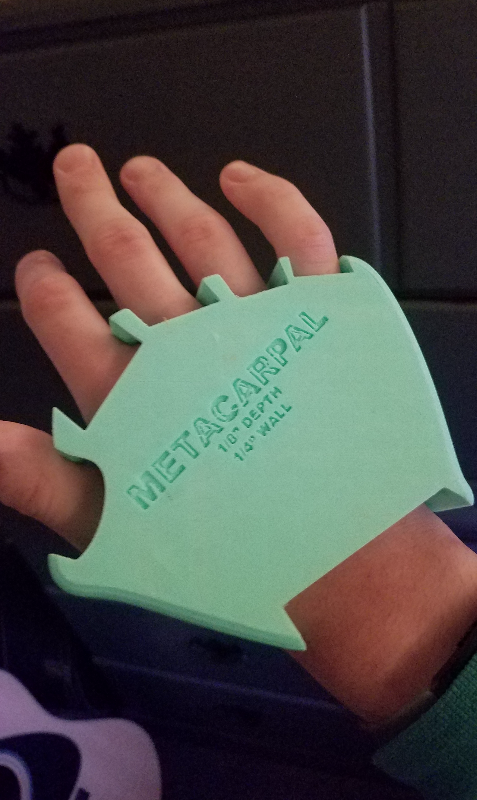
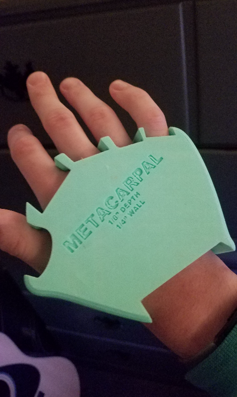

For my senior project, I decided to create, or at least research the possibility of creating an open-source
prosthetic. The term "open-source" denotes the procedure by which products, typically software, are created
using crowdsourced efforts in such a manner that their versioning history is visible and that the products
themselves can be freely accessed, modified, and improved upon by those interested. The most popular example of
this philosophy is the Berkeley Software Distribution (BSD) upon which many modern operating systems including
macOS, Android, and Linux are based upon.
The purpose of this project was to apply this model of distribution to prosthetic limb replacements. While
a widely needed resource, prosthetics are difficult to obtain due to their high price tag. Marina Musicus was
able to shed more light on this, citing the average, non-electric prosthetic to cost $10,000 to $50,000 in the
United States. Insurance coverage can be another barrier to obtaining these essential devices.
I set out to design a prosthetic hand of my own that could be reproduced by an end-user using a standard 3D printer. While not finished, the current model is almost sufficient to be a final product.
To improve upon this design, I would add thermoplastic polyurethane (TPU) threads beneath the digits and
connecting to the metacarpal region as Dr. Liarokapis suggested and has done with his own designs. TPU is a
flexible material which can be molded with a 3D printer just like hard plastics, and could provide an elastic
property to allow the digits to contract proportionally to movement of the metacarpal. This is a method of
endpoint control known as "body-movement," and gives the user a more intuitive experience in adjusting to their
prosthetic.
While I wasn't able to develop a fully-functioning prosthetic, this has been an extensive learning experience
and one I have enjoyed! Prototyping my designs has given me the ability to benchmark them and improve upon them,
and I feel my assembly is most of the way completed to being a useful addition to the open-source prosthetic
community. My work on this product so far, as well as the code for this website, can be found at
this GitHub repository.
 
